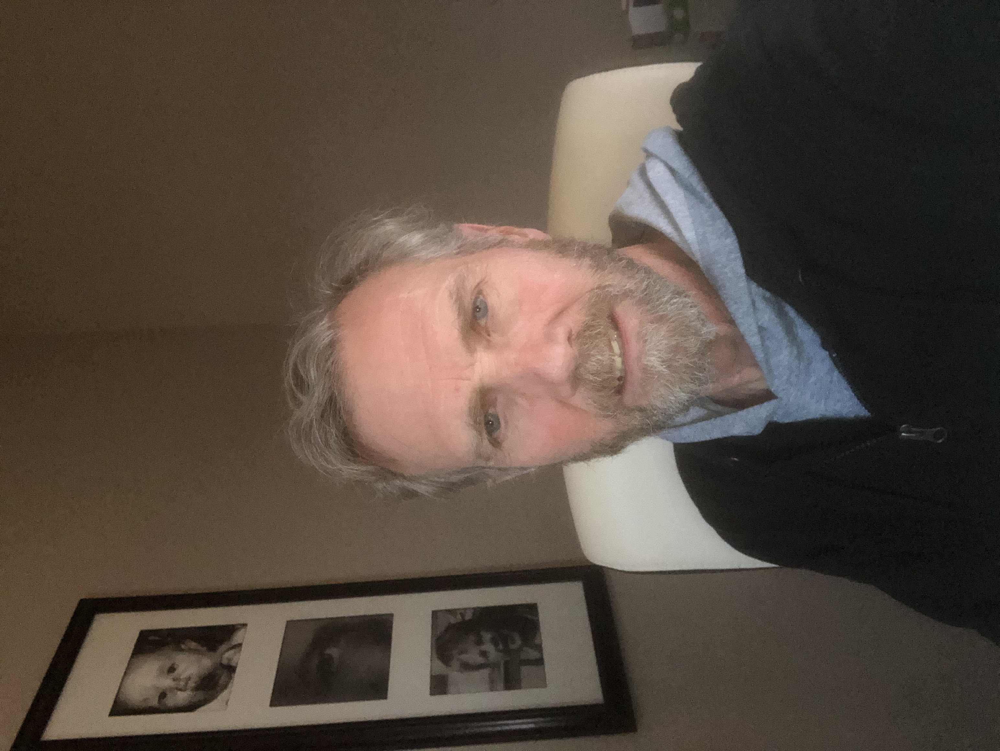

Program : Masters of Science Information Systems
I really enjoy education and learning. I've had a long and useful career. I do not need this degree for my job, though it might be helpful in the long run. I feel it will be very intersting to learn even more about the underlying nuts and bolts of this industry.
| Class ID | Class name | Dates |
| IS7012 | Web development with .Net | 8/25/2025 to 10/15/2025 |
| IS7065 | Generative AI for Business | 8/25/2025 to 10/15/2025 |
| IS7020 | Systems Analysis & Design | 10/16/2025 to 12/6/2025 |
| IS7024 | XML & Web Services | 10/16/2025 to 12/6/2025 |
| IS7050 | Enterprise Resource Planning 1 | 10/16/2025 to 12/6/2025 |
I've been toying with this thought for quite a while.
I have many strengths obtained over the years. This lists some of them.
My most interesting hobbies are work and education. I find both very rewarding. However, I cannot do them all the time. It is necessary to get some variation in your day.With that in mind, I have found a few other things to entertain me and also make my wife happy.
smart home
cnet
tech gadgets like meta glasses and quest
Quest

home improvement Lowes